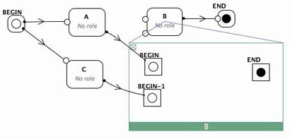

Instead of going to the next activity, the links are here connected
to the "BEGIN" operations of the associated operation level. At the
end, when the "END" operation is reached, the token are sent forward
to the next activity in the upper level, "END" activity in this case.
The Flexo model also features the notion of Events that react to external signals (e.g. arrival of an email) or internal timers and propagate tokens. More info on all these concepts in the associated help topics.